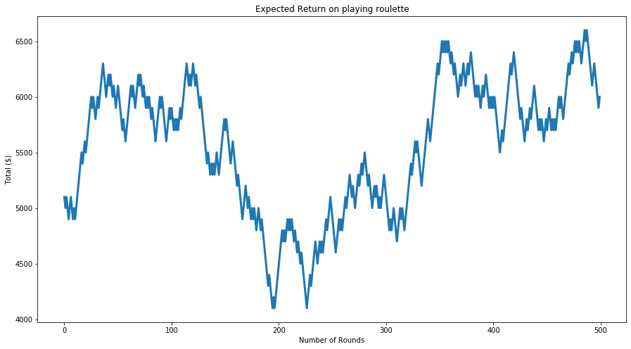
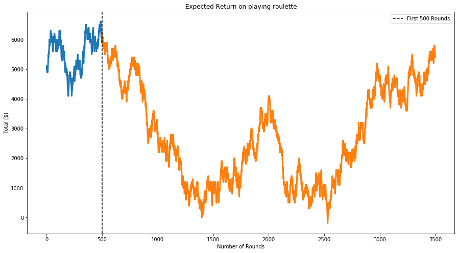
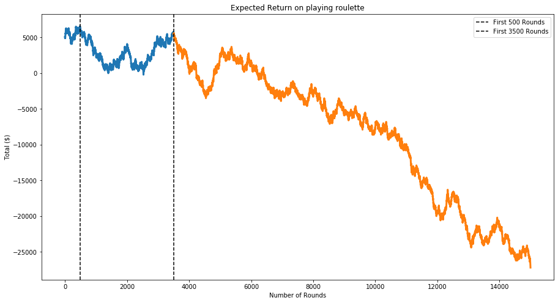
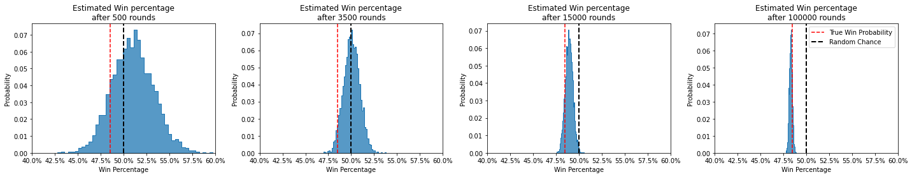
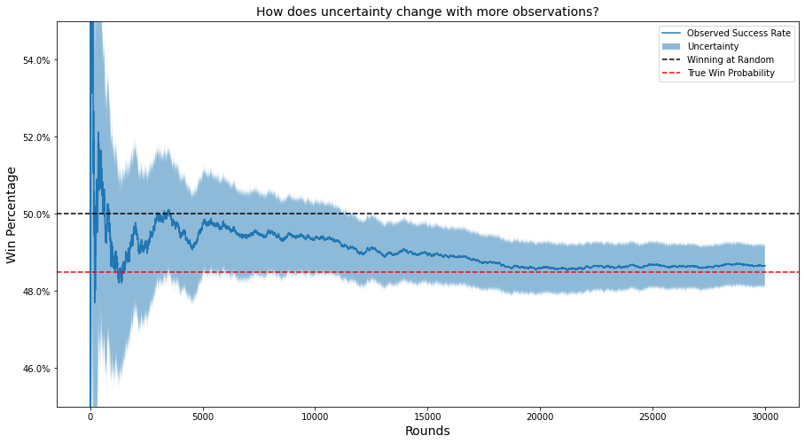

For some people in industry new to A/B testing, they might wonder “Why cant we just run an A/B test for 2 days and be done with it?”. Even those familiar with it might wonder why their team’s Data Scientist is insisting on so much. And even Data Scientists may be looking for easier ways to explain the need to them. The goal of this article is to cover just that, from a naive and explainable point of view.
So, How long should you run an A/B test for? Well let’s say you step into a casino with $5000 and you walk away with $6000. You just made a 20% return. Is it fair to say that a night out in the casino leads to a 20% return? Is it fair to say that our A/B test we ran for 2 days leads to a 20% lift in conversion? How do we know for sure?
We should run an A/B test for as long as it takes to rule out random chance.
While vague, and technically not the full picture, your friendly neightborhood data scientist should be able to answer this for you. The code for this blogpost can be found here.
Simulating a fake scenario
Let’s play out the casino example from above. I’m going to simulate out an entirely fake, but entirely possible scenario.
You go to the casino one night with $5000 and decide roulette is your game of choice. You get a little into it and play 500 rounds (in one night?? for examples sake, yes). Little do you know the real probability of winning is 48.5%
The plot below shows the total money you had at the start of each round of roulette

This is great - after 500 rounds of this you’ve made 122% return on your initial investment of $5000 and you’re winning 51% of the time.
Playing roulette must lead to a 20% return right? Commited to your strategy you decide to come back over the next few weeks and play another 3000 rounds, shown below.

Alright you’ve played 3500 rounds now and you have $5400 total. You’ve definitely had some runs of bad luck, but you’re still seeing a win percentage above 50% (50.1% in fact) and right now you’re heating up. You stay determined and play until you reach 15000 rounds.

What happened?
We started off on a hot streak winning 51% of our rounds, but as we played more and more rounds, it became more obvious we were losing money. This is a demonstration of the law of large numbers - as we play more and more rounds, the truth comes out
We can visualize this process via the beta distribution below. These plots visualize all of the possible values that the true win percentage could be (the x axis), and their relative plausibilities (the y axis). The first plot can be read as follows:
The win percentage is likely to be somewhere between 42.5% and 60%, with the most likely value being around 51%
As we move from left to right, our estimated distribution converges closer and closer to the true probability of winning a round

We can also visualize this as a time series, which really makes it clear how the uncertainty becomes smaller over time and the estimated value converges to the true value.

How does this tie back to A/B testing?
If we don’t choose our sample size for an experiment properly, we can end up making the wrong decisions!1 The larger the sample size we choose, the more likely we’ll make the right choice.
We can use power analyses (sometimes referred to as simulation studies) to estimate what sample size is needed for an experiment given the desired outcome.
Footnotes
Unless you’re using bayesian inference, which can really mitigate this risk.↩︎